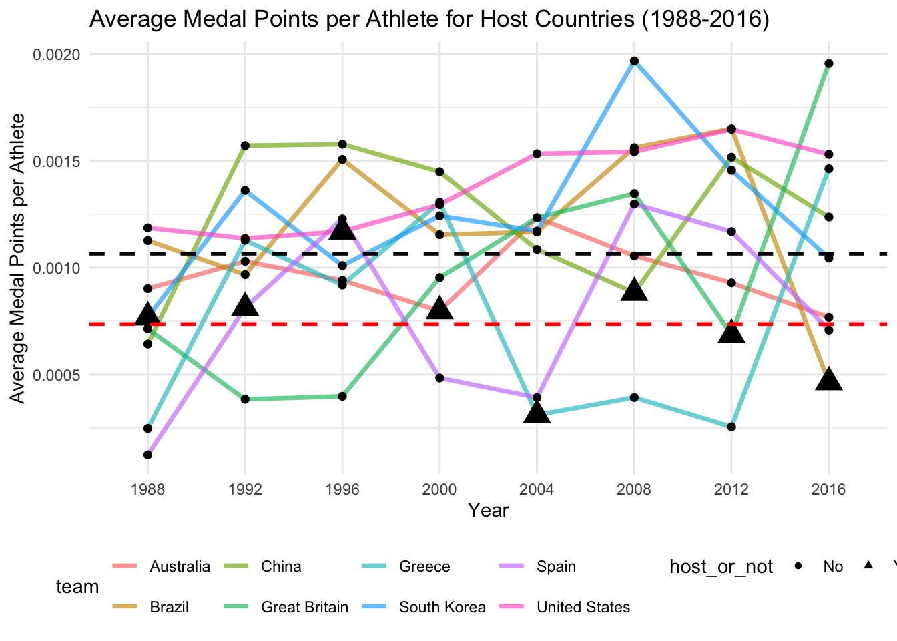

tuesdata <- tidytuesdayR::tt_load('2024-08-06')
olympics <- tuesdata$olympics
library(purrr)
library(tidyverse)
library(tidytuesdayR)
library(ggplot2)Home Advantage in the Olympics
A study of whether “Home Advantage” exists for Summer Olympics Hosts
Introduction
This analysis tests whether in the Summer Olympics, on a per athlete basis, a home advantage exists or not. This analysis builds on a TidyTuesday dataset, analyzing the 8 Summer Olympic hosts and their competing teams 7 times abroad and 1 time as host between 1988-2016. By contrasting the variable, average number of medal points per athlete for a given nation, with whether that nation was a host of the Summer Olympics at that instance of competition or not, we draw statistical conclusions regarding if a “Home Advantage” exists for olympic hosts. “Home Advantages” can greatly influence athletic performance and results in competitions. It is important to remember throughout this analysis that our “Home Advantage” is calculated on a per participating athlete basis. In this analysis, we in fact show that a statistical significance of “Home Disadvantage” exists on a per participating athlete basis.
Hypothesis and Dataset
Hypotheses:
Null Hypothesis: Whether a country hosts the Summer Olympics or not does not have an effect on per capita medal wins for that country.
Alternative Hypothesis: Whether a country hosts the Summer Olympics or not does have an effect on per capita medal wins for that country (either positively, resulting in an advantage, or negatively, resulting in a disadvantage).
Our alternative hypothesis is that the null hypothesis is incorrect; however, in order to draw a possible more precise statistical conclusion, in the event our alternative hypothesis is shown to be true, we will also be calculating 2 different p-values in order to conclude if hosting the summer olympics yields better results on a per participating athlete basis or not (not just that it has a statistical significance).
Here is a small snapshot of the data set we are working with:
olympics# A tibble: 271,116 × 15
id name sex age height weight team noc games year season city
<dbl> <chr> <chr> <dbl> <dbl> <dbl> <chr> <chr> <chr> <dbl> <chr> <chr>
1 1 A Dijia… M 24 180 80 China CHN 1992… 1992 Summer Barc…
2 2 A Lamusi M 23 170 60 China CHN 2012… 2012 Summer Lond…
3 3 Gunnar … M 24 NA NA Denm… DEN 1920… 1920 Summer Antw…
4 4 Edgar L… M 34 NA NA Denm… DEN 1900… 1900 Summer Paris
5 5 Christi… F 21 185 82 Neth… NED 1988… 1988 Winter Calg…
6 5 Christi… F 21 185 82 Neth… NED 1988… 1988 Winter Calg…
7 5 Christi… F 25 185 82 Neth… NED 1992… 1992 Winter Albe…
8 5 Christi… F 25 185 82 Neth… NED 1992… 1992 Winter Albe…
9 5 Christi… F 27 185 82 Neth… NED 1994… 1994 Winter Lill…
10 5 Christi… F 27 185 82 Neth… NED 1994… 1994 Winter Lill…
# ℹ 271,106 more rows
# ℹ 3 more variables: sport <chr>, event <chr>, medal <chr>Data Mutation
Let us first mutate our data set so as to help us in investigating per capita medal wins per participating country, for the Summer Olympics. In this light, we will mutate the data set so that we have a column that has medal wins per participating athlete, so that countries sending more athletes are not advantaged on a per athlete basis. Regarding the weighting of medals, we will count bronze medals as 1 medal point, silver medals as 2, and gold as 3 in order to better highlight a possible advantage, if there is one, that a country might have. No medal (NA) means 0 medal points, and joint medals will be awarded as their respective full medal’s medal points to both athletes/teams. Furthermore, we will mutate our data set so that we only analyze Summer Olympics. We will also analyze Olympics from only 1988 in order to have one instance of hosting per country, as both the 1984 and 1996 Olympics were hosted by the US. We are also doing this as to not go into issues with countries having different names/changing territories. Our data set runs until 2016.
# Selecting only Summer Olympics
olympicsdata <- olympics |>
filter(season=="Summer")
# Assigning medal point values
olympicsdata <- olympicsdata |>
mutate(medal_points = case_when(medal=="Gold" ~ 3, medal=="Silver" ~ 2, medal=="Bronze" ~ 1, medal=="NA" ~ 0, TRUE ~ 0))
#Selecting years from only 1988 to 2016
olympicsdata <- olympicsdata |>
filter(year >= 1988 & year <= 2016)
# Defining a function to change city names into their respective countries (as if they were in 2025) so that we can compare teams and countries for home-field advantage
hostcitytocountry <- function(olympicsdata, city) {
hostcitytocountry <- data.frame(
city = c("Seoul", "Barcelona", "Atlanta", "Sydney", "Athina", "Beijing", "London", "Rio de Janeiro"),
country = c("South Korea", "Spain", "United States", "Australia", "Greece", "China", "Great Britain", "Brazil"))
updatedolympicsdata <- olympicsdata |>
left_join(hostcitytocountry, by = setNames("city", city)) |>
mutate(!!city := country) |> select(-country)
}
olympicsdata <- hostcitytocountry(olympicsdata, "city")
olympicsdata# A tibble: 106,268 × 16
id name sex age height weight team noc games year season city
<dbl> <chr> <chr> <dbl> <dbl> <dbl> <chr> <chr> <chr> <dbl> <chr> <chr>
1 1 A Dijia… M 24 180 80 China CHN 1992… 1992 Summer Spain
2 2 A Lamusi M 23 170 60 China CHN 2012… 2012 Summer Grea…
3 12 Jyri Ta… M 31 172 70 Finl… FIN 2000… 2000 Summer Aust…
4 13 Minna M… F 30 159 55.5 Finl… FIN 1996… 1996 Summer Unit…
5 13 Minna M… F 34 159 55.5 Finl… FIN 2000… 2000 Summer Aust…
6 18 Timo An… M 31 189 130 Finl… FIN 2000… 2000 Summer Aust…
7 21 Ragnhil… F 27 163 NA Norw… NOR 2008… 2008 Summer China
8 22 Andreea… F 22 170 125 Roma… ROU 2016… 2016 Summer Braz…
9 23 Fritz A… M 22 187 89 Norw… NOR 2000… 2000 Summer Aust…
10 23 Fritz A… M 26 187 89 Norw… NOR 2004… 2004 Summer Gree…
# ℹ 106,258 more rows
# ℹ 4 more variables: sport <chr>, event <chr>, medal <chr>, medal_points <dbl>We now have a data table easier to work with in light of our aim. We will now extract data from this data table to create a separate data table, where we will have the competing team, the average medal points per athlete from that country in a given year of the summer olympics, the country that the host city is in, and the year of the summer olympics. We do this for all 8 hosts between 1988-2016 and their sports teams.
# Defining host countries for easier data use
host_countries <- c("South Korea", "Spain", "United States", "Australia", "Greece", "China", "Great Britain", "Brazil")
# Summarizing data table based on competing team, calculating the average medal points per athlete per country by summing up number of athletes and averaging out, host city country, and year; and summarizing in a data table organized alphabetically by team country name.
final_table <- map_dfr(host_countries, function(country) {
olympicsdata |>
filter(team==country) |>
group_by(team, year, city) |>
summarise(average_medal_points = mean(medal_points, na.rm = TRUE),
athletes_per_team = n_distinct(id), .groups = "drop") |>
mutate(average_medal_points_per_athlete = (average_medal_points/athletes_per_team)) |>
select(team, average_medal_points_per_athlete, city, year)
}) |> arrange(team)
final_table# A tibble: 64 × 4
team average_medal_points_per_athlete city year
<chr> <dbl> <chr> <dbl>
1 Australia 0.000901 South Korea 1988
2 Australia 0.00103 Spain 1992
3 Australia 0.000940 United States 1996
4 Australia 0.000797 Australia 2000
5 Australia 0.00123 Greece 2004
6 Australia 0.00105 China 2008
7 Australia 0.000929 Great Britain 2012
8 Australia 0.000767 Brazil 2016
9 Brazil 0.00113 South Korea 1988
10 Brazil 0.000967 Spain 1992
# ℹ 54 more rowsResults
Let us now graph these teams’ performances per athlete over the years.
# Extracting host/not host information, to be used in graphing and calculations
final_table <- final_table |>
mutate(host_or_not = ifelse(city==team, "Yes", "No"))
# Calculating the average medal points per athlete when country is the host
hosts_average <- final_table |>
filter(host_or_not=="Yes") |>
summarise(host_average_medal_points = mean(average_medal_points_per_athlete, na.rm = TRUE)) |>
pull(host_average_medal_points)
# Calculating the average medal points per athlete, regardless of if country is host or not
overall_average <- final_table |>
summarise(overall_average_medal_points = mean(average_medal_points_per_athlete, na.rm = TRUE)) |>
pull(overall_average_medal_points)
# Plotting each country's scatterplot, non-host data points small black, host data points triangle, and average medal points per athlete lines for both overall and host-only
ggplot(final_table, aes(x = factor(year), y = average_medal_points_per_athlete, group = team, color = team)) +
geom_line(size = 1.2, alpha = 0.65) +
geom_point(aes(shape = host_or_not), size = ifelse(final_table$host_or_not=="Yes", 5.2, 2), color = "black") +
scale_shape_manual(values = c("Yes" = 17, "No" = 16)) +
scale_fill_manual(values = c( "red", "red")) +
scale_x_discrete(labels=function(a) gsub("\\.", " ", a)) +
labs(x = "Year",
y = "Average Medal Points per Athlete",
title = "Average Medal Points per Athlete for Host Countries (1988-2016)") +
theme_minimal() + theme(legend.position = "bottom") +
geom_hline(yintercept = hosts_average, linetype = "dashed", color = "red", size = 1) + geom_hline(yintercept = overall_average, linetype = "dashed", color = "black", size = 1)
The above graph shows each team’s athletes’ average medal points for each year of the competition. Each data point is marked with a black dot, where each country’s statistics are shown with a semi-opaque colored line. If the country was host that year in which it was competing, its data points are shown with a big triangle.
Shown with the dashed black line on the graph, if we average out all data points (whether the country was host or not), we get an average medal point per athlete of:
overall_average[1] 0.001065398Shown with the dashed red line on the graph, if we average out all data points (whether the country was host or not), we get an average medal point per athlete of:
hosts_average[1] 0.0007362636This means that athletes who are qualified to the Olympics are 44.7% more likely, on average, to score a medal if their country is not the host for that year, according to our data set.
Permutation Test
In order to do a permutation test, let’s add a simple column showing whether if the country was the host or not for a given average medal points per athlete for a given Summer Olympics, appending it to our data table above.
final_table <- final_table |>
mutate(host_or_not = ifelse(team==city, "Yes", "No"))
final_table# A tibble: 64 × 5
team average_medal_points_per_athlete city year host_or_not
<chr> <dbl> <chr> <dbl> <chr>
1 Australia 0.000901 South Korea 1988 No
2 Australia 0.00103 Spain 1992 No
3 Australia 0.000940 United States 1996 No
4 Australia 0.000797 Australia 2000 Yes
5 Australia 0.00123 Greece 2004 No
6 Australia 0.00105 China 2008 No
7 Australia 0.000929 Great Britain 2012 No
8 Australia 0.000767 Brazil 2016 No
9 Brazil 0.00113 South Korea 1988 No
10 Brazil 0.000967 Spain 1992 No
# ℹ 54 more rowsIn order to do a permutation test, we now take the variables host_or_not, telling us if a city is a host or not, and average_medal_points_per_athlete, telling the average medal points for athletes at a given year from a given team at the Summer Olympics, from the above table. While doing a permutation test, we discard whether if the average_medal_points_per_athlete is by a host nation instance or not, and we randomize/shuffle (here 10000 times) to create a normal distribution of a case where average_medal_points_per_athlete randomly varied, but assuming host_or_not was not a factor. This is called our Null Distribution.
# Code heavily helped by DS002 Lecture Notes, cited down below
# Creating the permutation test data
perm_data <- function(rep, data){
data |>
select(host_or_not, average_medal_points_per_athlete) |>
mutate(math_perm = sample(average_medal_points_per_athlete, replace = FALSE)) |>
group_by(host_or_not) |>
summarize(points_avg = mean(average_medal_points_per_athlete),
perm_avg = mean(math_perm)) |>
summarize(points_avg_diff = diff(points_avg),
perm_avg_diff = diff(perm_avg),
rep = rep)
}
# Setting seed and shuffling 10000 times
set.seed(4747)
perm_stats <- map(c(1:10000), perm_data, data = final_table) |>
list_rbind()
# Plotting it on a histogram with red lines showing our dataset's case testing for extremes.
perm_stats |>
ggplot(aes(x = perm_avg_diff)) +
geom_histogram() +
geom_vline(aes(xintercept = points_avg_diff), color = "red")
# Calculating p-values for both an advantage condition or a disadvantage condition
perm_stats |>
summarize("Advantage", p_value_avg = mean(perm_avg_diff > points_avg_diff)) # A tibble: 1 × 2
`"Advantage"` p_value_avg
<chr> <dbl>
1 Advantage 0.989perm_stats |>
summarize("Disadvantage", p_value_avg = mean(perm_avg_diff < points_avg_diff))# A tibble: 1 × 2
`"Disadvantage"` p_value_avg
<chr> <dbl>
1 Disadvantage 0.0107Please note since our hypothesis tests for both an advantage condition or disadvantage condition, we have two p-values for either relationship. In our case, looking at the values, we can conclude that there is a disadvantage relationship in our hypothesis, which we will get to now.
Conclusion
From our data, we see that athletes who are qualified to the Olympics are 44.7% more likely, on average, to score a medal if their country is not the host for that year. Furthermore, according to our p-value calculation, our alternative hypothesis is shown in the disadvantaged direction, as we have reached a p-value of 0.0107, as this is less than the p-value of 0.05 generally accepted by the modern-day scientific institution (2025). This p-value looks at the probability that our data set might have randomly been on the left of the red line in the above graph. The advantaged direction would have looked at the right of the red line, which would obviously been an unacceptable conclusion.
To reiterate, we show that athletes who are qualified to the Olympics are 44.7% more likely, on average, to score a medal if their country is not the host for that year. This might seem counter-intuitive at first, as most research shows that in athletics a “Home Advantage” is quite significant. Factors such as fan support, fan or bureaucratic pressure on judges/referees, similar climate/sports hall conditions, similar cuisine, possible non-temporary stays during the competition all favor the home team. So, what might be the cause that we actually seem to have a “Home Disadvantage”?
We had established that our analysis was on a per athlete basis. It is most likely true, that all these factors are noticeably helping the home team. However, the home team also is generally allowed to bring a very significant amount of more athletes from its own nation than it can send abroad for another olympic competition, per se. This is possibly a combination of wildcard entrees being awarded to the host more often, pre-determined extra quotas for the host, and a big relief in budgeting for sponsoring athletes domestically and not internationally.
Of course, assuming the supply of world-class athletes are limited, the home country will fill the rest of the spots with less-likely-world-class athletes. This likely will result in overall worse performance by those athletes. Furthermore, the number of medals stays the same regardless of how many athletes from a country compete. For all these reasons, due to the average quality of athletes going down as a result of lower qualifying standards due to a supply of more available positions, on a per athlete basis, hosts of Summer Olympics events are disadvantaged according to our data set. Our closest estimate, according to the cross-competitions of the 8 Summer Olympics hosts from 1988 to 2016 over this time interval, that athletes from these countries during this interval were 44.7% more likely, on average, to score a medal if their country was not the host for that year.
We have shown a statistical significance showing our alternate hypothesis that hosting a Summer Olympics does have a negative effect on the number medals earned per participating athlete capita. This is backed by a p-value of 0.0107.
Sources
TidyTuesdayR package obtained from https://github.com/rfordatascience/tidytuesday/blob/main/data/2024/2024-08-06/readme.md. Provided by ‘jonthegeek’, published on 2024-08-06 borrowing from previously published data also via TidyTuesday (2021-07-27).
Coding help obtained from: https://ds002r-fds.netlify.app/slides/2025-03-26-perm. With many thanks to Prof. Hardin.